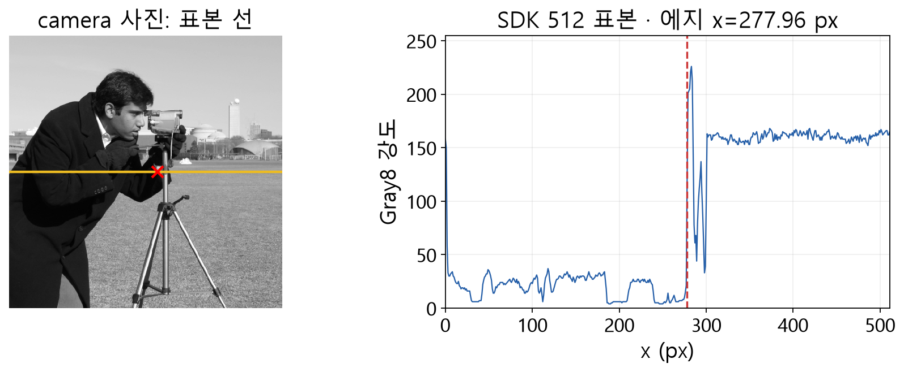

스트립, 미분과 피크
끝점 p₀, p₁ 사이 길이 L, 법선 n=(-dy/L, dx/L), i번째 중심 pᵢ=p₀+i(p₁−p₀)/(N−1), 거리 dᵢ=iL/(N−1)입니다. 각 중심의 법선 방향 정수 간격 W개를 이중선형 보간해 평균합니다. 기본 Profile은 전체 스트립이 ROI 안에 있어야 합니다. Gray8, Gray16, GrayF32를 지원하며 기본 경로에서 GrayF32 전체 값은 유한해야 합니다.

판독 기준
- 영상 좌표와 그래프 가로축 모두 전체 영상 픽셀 x입니다.
- 표본 전체를 원본 행과 비교했으며 에지 위치의 실제 정밀도 인증은 아닙니다.
공개 camera 사진의 256번 행에 대해 SDK가 반환한 512개 표본을 그렸습니다. 표본은 원본 행과 요소별 대조했습니다. 표시된 에지의 서브픽셀 정확도를 실측 기준으로 검증했다는 뜻은 아닙니다.
기본 Caliper는 내부에서 gᵢ=(vᵢ₊₁−vᵢ₋₁)/(2Δ), 양 끝에서 전방/후방 차분을 사용합니다. Δ=L/(N−1), 강도 단위는 원시 픽셀 값/픽셀입니다. Rising은 g, Falling은 −g, Any는 |g|를 점수로 삼으며 양의 국소 피크 중 threshold 이상을 찾습니다. 포물선 보간은 표본 간격의 ±0.5로 제한하며 반환 strength는 원래 기울기의 부호를 유지합니다. 프로파일 방향을 바꾸면 상승과 하강이 바뀝니다.
프로파일은 2차원 영상을 지정된 방향으로 훑어 얻는 1차원 밝기 곡선입니다. 각 중심 위치의 수직 방향 값을 평균하면 한 줄에 생긴 작은 잡음의 영향을 줄여 볼 수 있지만, 띠가 두 개의 서로 다른 면을 지나면 그 밝기도 함께 섞입니다. 따라서 선분의 방향과 폭은 찾으려는 경계의 배치에 맞게 정해야 합니다.
예를 들어 양 끝 사이가 8픽셀이고 표본을 9개 두면 한 칸 간격입니다. 한 위치의 양옆 밝기가 0과 100이라면 중앙차분은 50 강도/픽셀입니다. 이 수치가 임계값 이상이고 주변보다 피크 조건을 만족해야 에지가 됩니다. 진행 방향을 반대로 하면 같은 물리 경계의 상승·하강이 서로 바뀌므로, 기대한 결과가 없을 때는 영상 밝기와 함께 선분 방향도 확인하십시오.